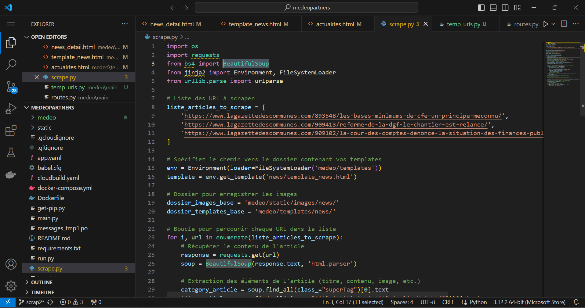
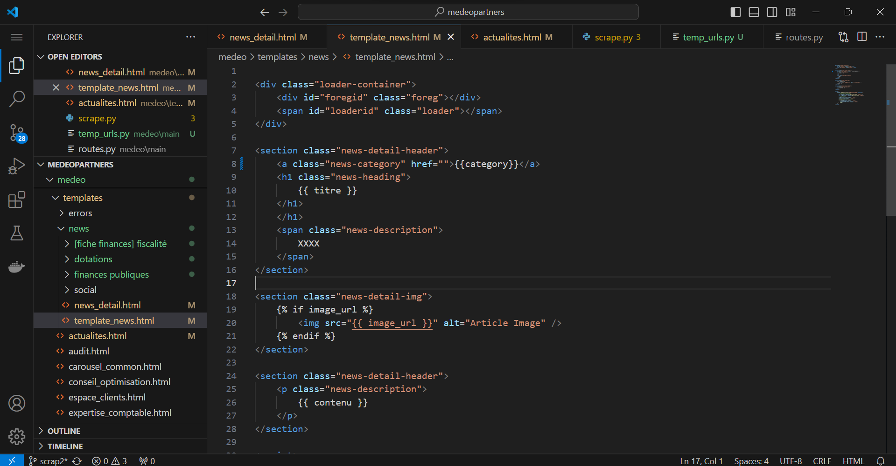

 
Le projet d'automatisation du contenu pour un site d'expertise comptable vise à simplifier et optimiser le processus de publication d'articles sur leur site web. Initialement, la mise à jour du contenu impliquait une manipulation manuelle du code HTML du site chaque fois qu'un nouvel article devait être ajouté. Pour remédier à cette tâche fastidieuse, un script Python a été développé pour automatiser ce processus.